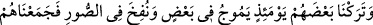
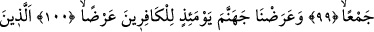
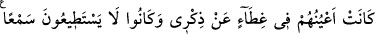
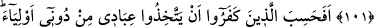
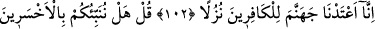
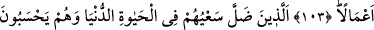
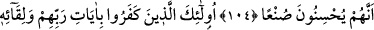
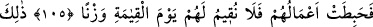
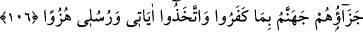

EN ÇOK ZARARA
UĞRAYANLAR
99. O gün (kıyâmet gününde bakarsın ki) biz onları, birbirine çarparak çalkalanır
bir halde bırakmışızdır; Sûr’a da üfürülmüş, böylece onları bütünüyle bir araya
getirmişizdir.
100. Ve kâfirleri o gün cehennemle yüz yüze getirmişizdir.
101. Onlar gözleri beni anmaya kapalı bulunan, kulak vermeye de tahammül
edemez olanlardı.
102. Kâfirler, beni bırakıp da kullarımı dostlar edineceklerini mi sandılar? Biz
cehennemi kâfirlere bir konak olarak hazırladık.
103. De ki: Size, (yaptıkları) işler bakımından en çok ziyana uğrayanları
bildirelim mi?
104. (Bunlar;) iyi işler yaptıklarını sandıkları halde, dünya hayatında çabaları
boşa giden kimselerdir.
105. İşte onlar, Rablerinin âyetlerini ve O’na kavuşmayı inkâr eden, bu yüzden
amelleri boşa giden kimselerdir ki, biz onlar için kıyâmet gününde hiçbir ölçü
tutmayacağız.
106. İşte, inkâr ettikleri, âyetlerimi ve rasullerimi alaya aldıkları için onların
cezası cehennemdir.
“O gün” bazı alâmetlerin görülmesiyle vaadin gerçekleştiği o günde “biz onları”
yaratılmışlardan bâzılarını “birbirine çarparak çalkalanır bir halde bırakmışızdır.”